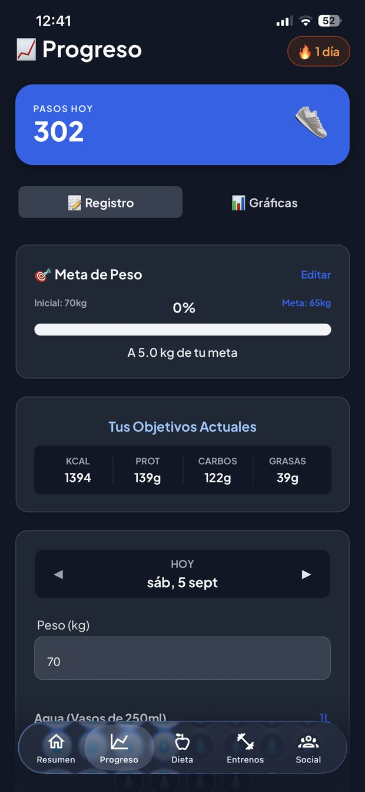
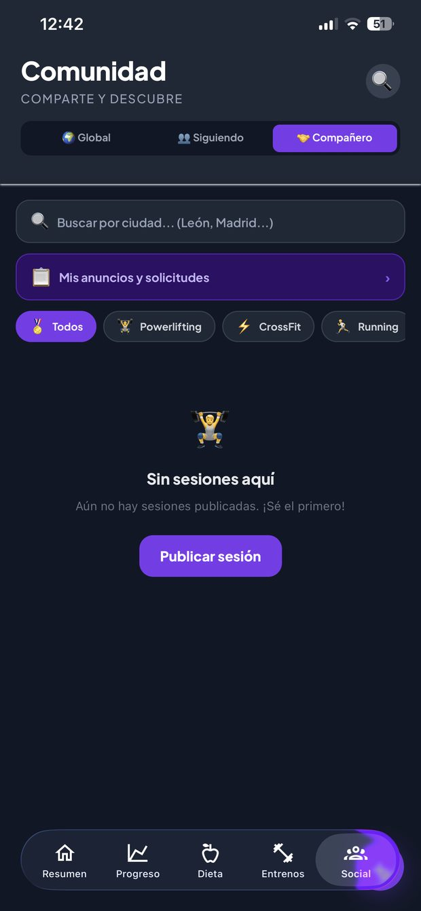

Producto propio · Suscripción · iOS, Android y web
Nutreefit
Plataforma de nutrición y entrenamiento con IA, en español e inglés, con cuenta unificada entre móvil y web.
El problema que resuelve
Contar calorías es fácil. Lo difícil es el jueves a las ocho de la tarde, cuando te quedan 260 kcal, tienes lo que tienes en la nevera y no sabes qué hacer con ello. Ahí es donde la gente abandona la dieta, y ahí no ayuda ningún contador.
Nutreefit responde esa pregunta concreta: qué comer ahora, con lo que tienes y con lo que te queda. Le dices qué hay en la nevera y te propone platos; te enseña recetas que encajan exactamente en las calorías que sobran; y si quieres dejar de decidir cada día, te genera el menú semanal con su lista de la compra.
Alrededor de eso está lo demás que hace falta para no tener cinco apps abiertas: registro con macros y micronutrientes, peso e hidratación, entrenamiento con rutinas e historial, y una forma de encontrar con quién entrenar.
El producto, pantalla a pantalla
Capturas de la aplicación real. Al lado de cada una, lo que hay detrás de lo que se ve — y de lo que deliberadamente no está.

Lo primero no es un informe, es una acción
La portada de la app podría ser un panel de estadísticas. Es una lista de cosas que puedes hacer ahora mismo.
Un solo dato arriba
Consumidas contra objetivo y el porcentaje. Es lo único informativo de la pantalla: el resto es acción. Un panel con seis métricas se mira una vez y no se vuelve.
La IA en la portada, no en un menú
Cuatro funciones de IA visibles sin desplazar. Son la razón por la que alguien paga; esconderlas en un submenú es esconder el producto.
Chef IA: la función del jueves
«Dime qué tienes en la nevera y crearé 3 platos». Resuelve el momento exacto en que la gente abandona: tener hambre, tener poco y no saber qué hacer.
Food Match: el puente
Recetas que cuadran con las calorías restantes. Es lo que convierte un contador en una decisión: del «te quedan 260» al «cómete esto».
Cinco secciones y ninguna más
Dieta, entreno y progreso son el producto. Social es el borde, y está deliberadamente acotado (ver caso 7).

Aquí es donde vive el caso del aceite
El registro diario, y también el sitio donde se vieron dos de los problemas documentados.
Diario y ayuno, misma pantalla
Quien hace ayuno intermitente no quiere otra app. Conviven en una pestaña en vez de bifurcar el producto.
El aceite de oliva, literalmente
Este es el ingrediente del caso 1: aparecía en el 60,7 % de la biblioteca de recetas y funcionaba como comodín, colando platos que no tenían nada que ver con lo pedido.
El número que dispara la decisión
Calorías restantes en verde, no consumidas. Es el dato a partir del cual el usuario hace algo; el de consumidas solo sirve para sentirse mal.
Micronutrientes
Hierro, zinc, fibra. Es lo que separa un contador de calorías de una herramienta de nutrición, y lo que justifica la suscripción frente a las apps gratuitas.

La métrica que motiva no es el peso
Un registro de peso es deprimente. Una distancia a la meta es un objetivo.
La racha, arriba a la derecha
Es el único elemento de la app diseñado explícitamente para la vuelta diaria. Uno, no diez: los sistemas de rachas apilados generan culpa, no hábito.
Distancia a la meta, no peso absoluto
«A 5,0 kg de tu meta». El peso sube y baja por agua y por la hora del día; la distancia al objetivo es lo único que aguanta el ruido diario.
Los macros no se preguntan
Se calculan desde el objetivo del usuario. Pedirle a alguien que decida sus gramos de proteína es trasladarle un trabajo que el producto debería hacer.

Generar es fácil; repetir es el producto
Casi todas las apps de entreno generan rutinas. Muy pocas resuelven qué pasa la segunda semana.
La variable que casi nadie pide
La rutina se genera según objetivo y equipo disponible. Sin esa segunda parte, el plan manda hacer press de banca a alguien que entrena en casa con dos mancuernas.
Plantillas propias
La mayoría de la gente repite rutina. Poder guardar la tuya importa más que poder generar una nueva cada día.
Historial con esfuerzo percibido
Cada sesión guarda series y RPE. El RPE permite progresar sin medir cargas al gramo, que es lo que abandona el 90 % de la gente a las tres semanas.

La parte del producto que decidí no dejar crecer
Es la única sección con una decisión de alcance escrita, y la única que enseño con su estado vacío a la vista.
Chat solo tras aceptación mutua
Es la decisión de moderación que importa: elimina el mensaje no solicitado, que es de donde sale casi todo el abuso en apps de fitness.
Se busca por ciudad y deporte
No por personas. El objeto de búsqueda es una sesión de entreno, no un perfil; eso mantiene el producto lejos de ser un escaparate.
Y sí, ahora mismo está vacío
Una función social sin gente dentro resta. Enseñarlo es más honesto que recortar la captura, y es exactamente lo que motivó el caso 7: acotar esto antes de lanzar en vez de abrir un muro que no puedo moderar solo.
El modelo de negocio, que aquí es parte del producto
Cada llamada de IA cuesta dinero real. Eso obliga a que el precio y el diseño se decidan juntos, no por separado.
Freemium con coste medido
Cada anuncio recompensado está dimensionado para cubrir el coste de la llamada de IA que desbloquea. El anuncio deja de ser un peaje arbitrario y pasa a ser la forma de que quien no paga siga teniendo acceso.
Un límite por función, no uno para todas
Las 13 funciones de IA no cuestan lo mismo ni aportan lo mismo. Cada una tiene su propio tope, calibrado por coste y por valor, con control de cuota en servidor.
Precio revisado país a país
Con el modelo de rentabilidad por usuario revisé el precio en unos 175 países y corregí los que, con la fiscalidad y el tipo de cambio locales, no cubrían coste.
Nada escondido tras el muro
El posicionamiento es que el plan gratuito tenga IA de verdad. Cuando las cuentas no salían, preferí tocar los límites y el precio antes que tocar esa promesa.
Decisiones documentadas
Cinco de los siete casos salen de este producto. Cada uno lleva el coste que acepté a cambio.
Con qué está construido
Las decisiones de arquitectura son mías; la implementación se realiza con asistencia de IA sobre esas decisiones.
Estado
A 20 de septiembre de 2026
Aprobada en la App Store en septiembre de 2026 y disponible fuera de la Unión Europea. En la UE, incluida España, que es su mercado principal, queda pendiente de que Apple valide el trámite del Reglamento de Servicios Digitales (DSA). En Google Play está terminando la prueba cerrada obligatoria de 14 días.
La plataforma web está operativa en nutreefit.com, con la misma cuenta que la aplicación móvil, así que se puede probar el producto ahora mismo sin esperar a las tiendas.
No hay datos de descargas, retención ni ingresos porque todavía no los hay. Lo que hay son decisiones y métricas de producto que puedo abrir y enseñar.